I build lots of random projects. Check the best ones out below.
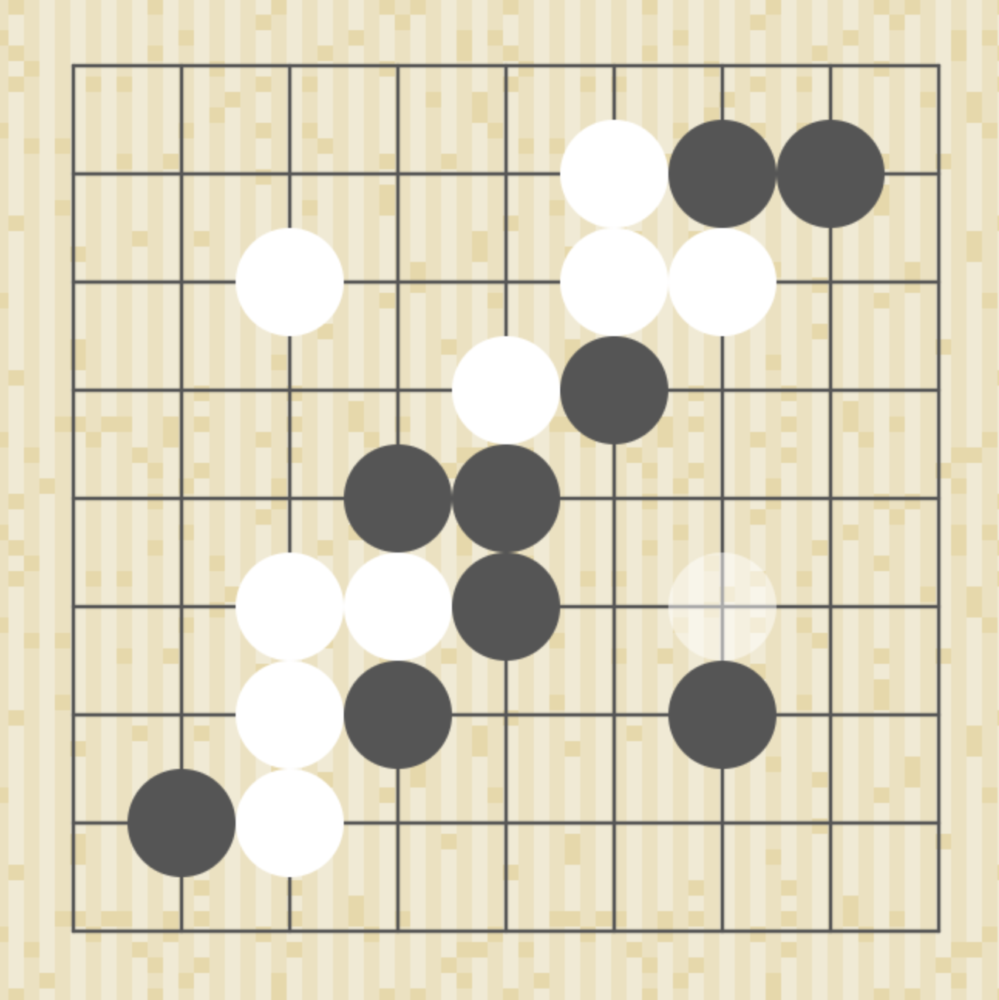
OnlineGoBoard
Play Go online with Peer2Peer multiplayer, and the abilty to undo moves. link
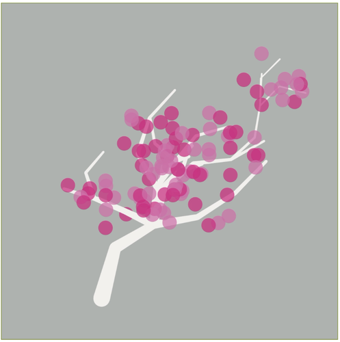
SVTree
Generate trees as SVG images with live preview. link
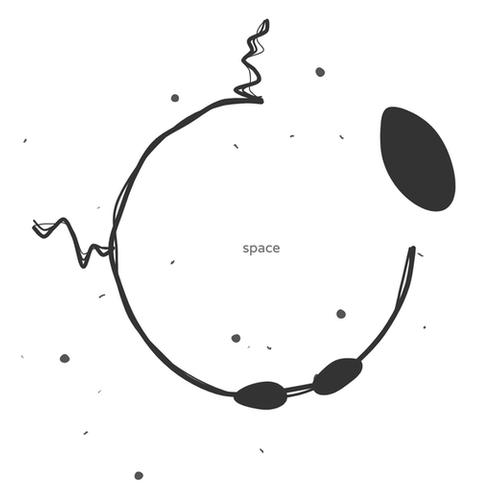
ArrivalLanguage
Experience the same questions that language scientists had in the movie Arrival. link
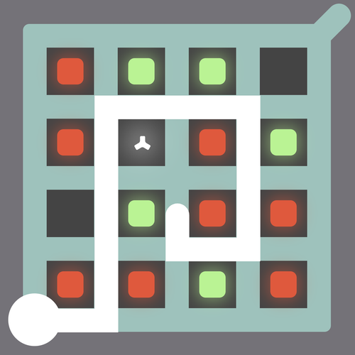
Witness
Solve this puzzle from The Witness implemented with web technologies. link
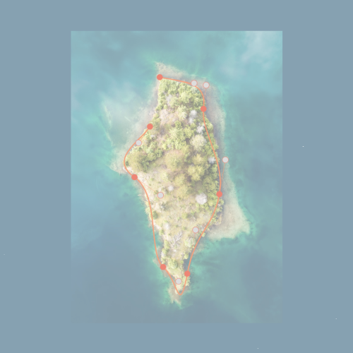
BezierCurveTool
Create smooth bezier curves around reference images. link
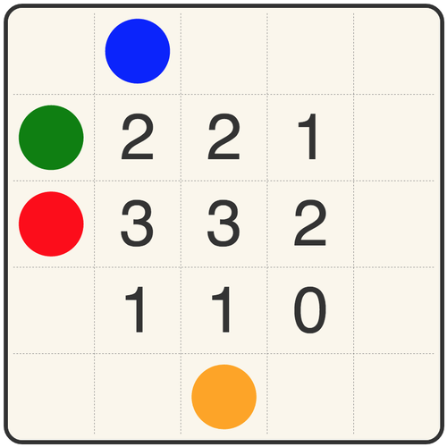
Unwind
Try to get all numbers to read zero without going negative. link
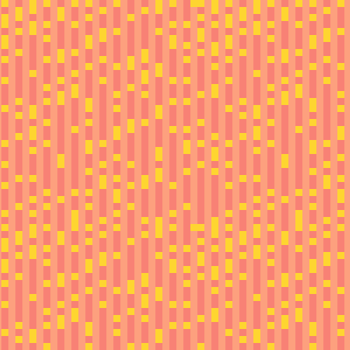
SVGBackground
Pleasing SVG backgrounds for all your background needs. link
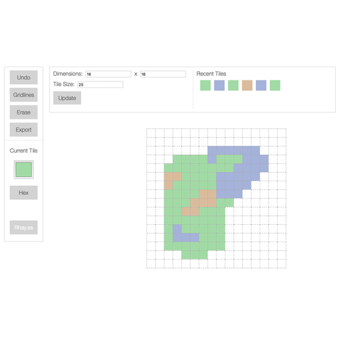
TileMapCreator
A short description. link
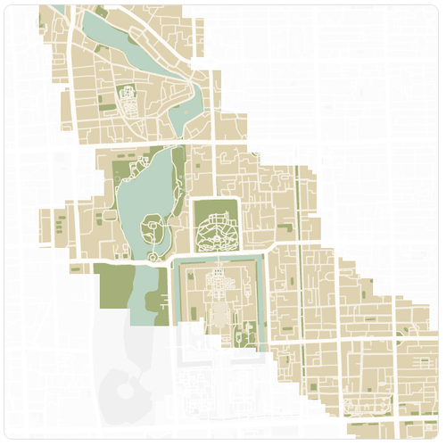
ColourableMap
Using a map and a quad-tree to track where a user has hovered the mouse. link
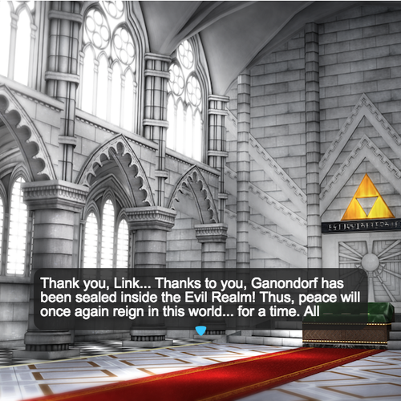
TextBubblesPhaserJS
An implementation of Text Bubbles for use in PhaserJS. Inspired by the Legend of Zelda. link
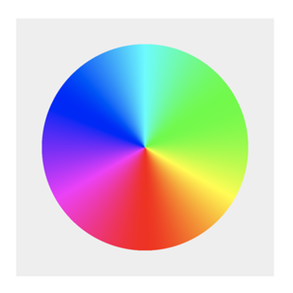
ColorWheel
Calculating colors mathematically, and generating astetically pleasing pallets. link
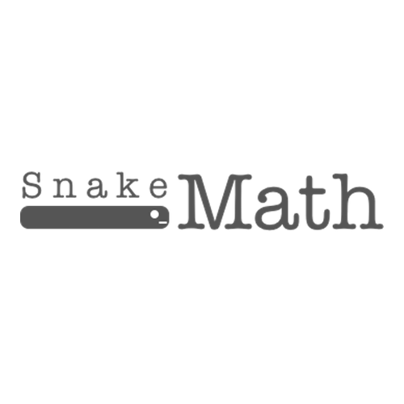
SnakeMath
Math as seen from the mind of a snake. Inspored by an episode of Rick and Morty. link
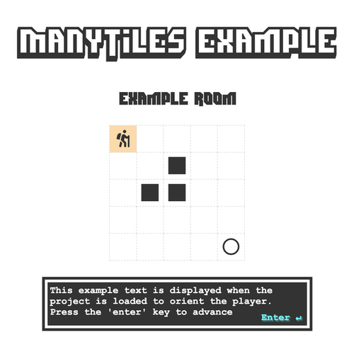
ManyTiles
Light weight frame work for creating tile based adventure games. link
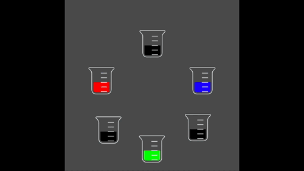
HexColorMix
Mix together colors from different beakers to create new ones. link
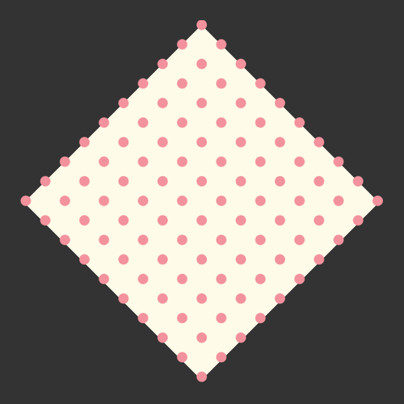
PhysicsDots
A physics simulation using PhaserJS. link
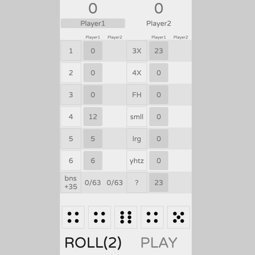
YahtzeeClone
A VueJS clone of the dice game Yahtzee. link
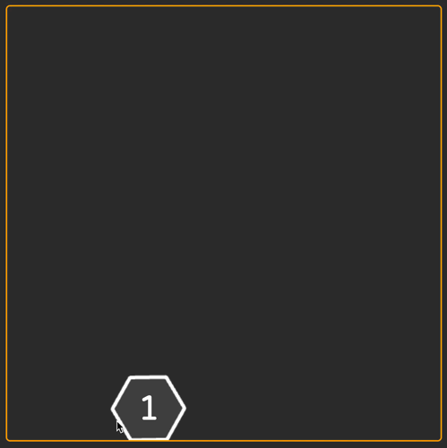
HexDice
A new kind of dice. Hex Dice. link
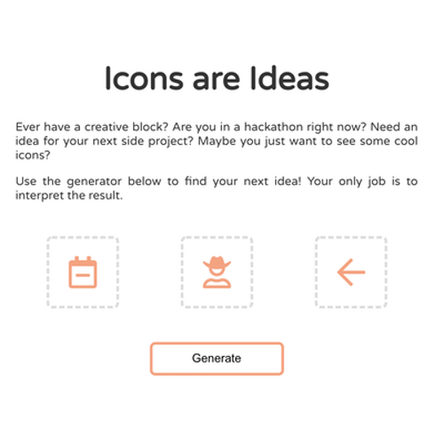
IconsAreIdeas
All icons are ideas and, if you put three together, you might walk away with a concept for a new project.
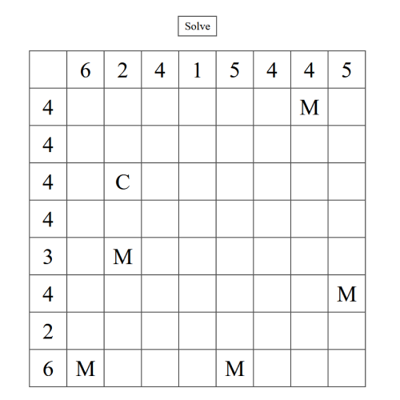
Solver
Uses backtracking and constraints to solve a DnD based Sodoku style puzzle from the Zachtronics game Last Call BBS. link